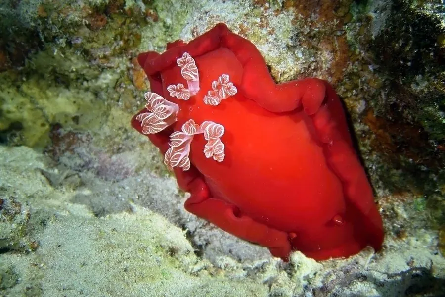

软体动物 · 动物界
西班牙舞娘蛞蝓 Hexabranchus sanguineus

体形大、通体鲜红的裸鳃类，游泳时身体像弗拉门戈舞裙一样翻卷摆动，因此得名“西班牙舞娘”，以海绵为食。
- 分类
- 门软体动物门纲腹足纲目裸鳃目科六鳃海牛科属六鳃海牛属
- 栖息环境
- 热带珊瑚礁区，水深 1–30 m，常见于礁石和海绵丛附近
- 地理分布
- 印度洋—太平洋热带海域，从东非、红海到日本南部、澳大利亚和夏威夷，中国南海及台湾周边有分布
- 保护级别
- 暂无评估；中国未列入国家重点保护野生动物名录
物种志
西班牙舞娘蛞蝓身体柔软，成体体长可达 40 cm，是体型最大的裸鳃类之一。体色鲜红或橙红，身体边缘常镶着白色或黄色的边。平时它把鳃和触角收拢，静止在礁石上，看起来像一团红色的褶皱，很难与珊瑚和海绵区分。
西班牙舞娘蛞蝓分布于印度洋—太平洋的热带珊瑚礁，从东非、红海到日本南部、澳大利亚和夏威夷，中国南海及台湾周边有分布。它栖息于礁区，水深 1–30 m，以海绵为食，并能把海绵中的毒素储存在体内用于防御，因此捕食者通常不敢吃它。游泳时，它会展开身体两侧的宽大缘膜，像弗拉门戈舞裙一样翻卷摆动，姿态优美，因此得名“西班牙舞娘”。它是雌雄同体的动物，交配后产下红色带状的卵团，卵团常黏附在礁石上。目前它没有IUCN 的正式评估，中国未将其列入国家重点保护野生动物名录。
形态与习性
- 食性以海绵为食，并把海绵毒素储存在体内防御
- 体长可达 40 cm，是最大的裸鳃类之一
- 游泳姿态展开身体两侧缘膜，像舞裙一样翻卷摆动
- 栖息深度珊瑚礁区，水深 1–30 m
- 繁殖雌雄同体，交配后产下红色带状卵团
- 防御体色鲜红警示，体内含来自海绵的毒素
趣味知识
- 西班牙舞娘蛞蝓游泳时身体两侧翻卷摆动，像舞者的裙摆。
- 它以海绵为食，并把海绵中的毒素储存起来用于防御。
- 它是体型最大的裸鳃类之一，体长可达 40 cm。